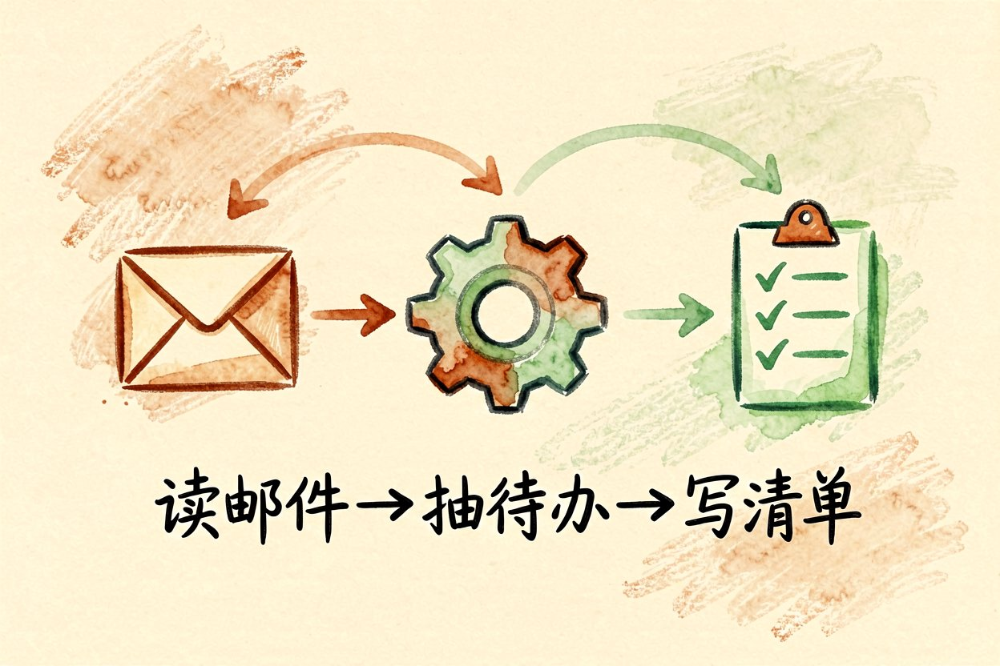
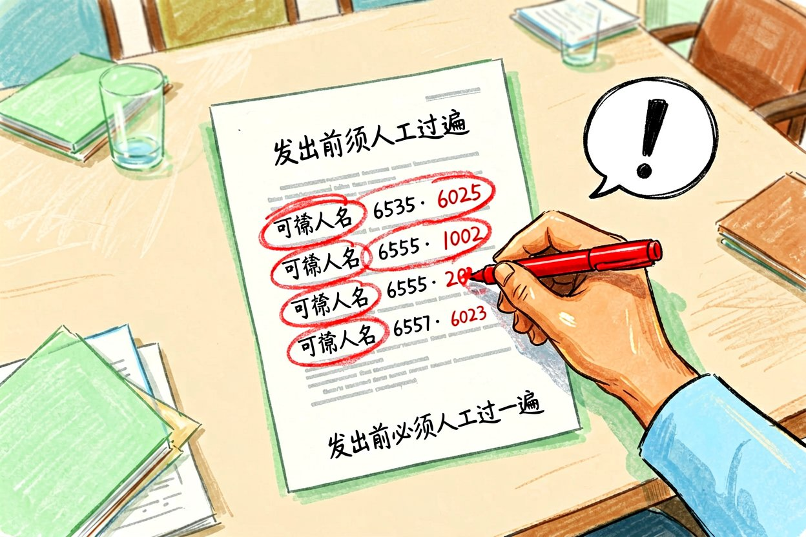
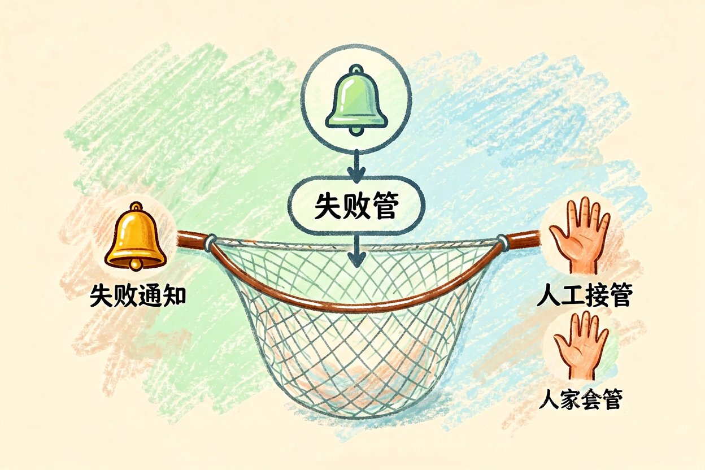
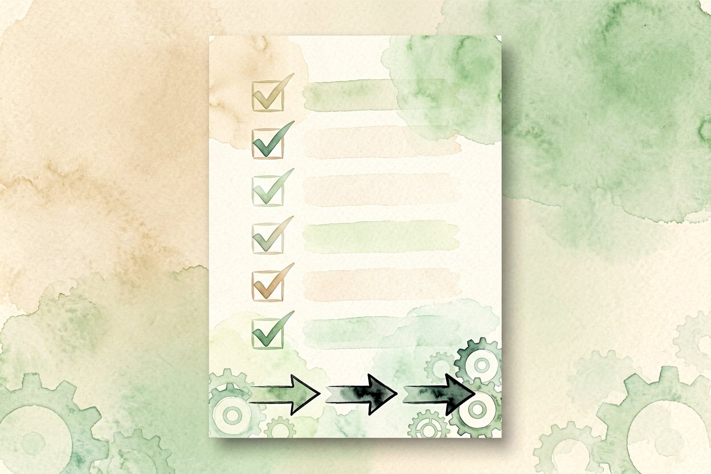

办公自动化工作流：把重复活儿交给 AI
每天重复做表、发邮件、整纪要？把这几件事交给 AI 办公自动化工作流，时间立刻省出来。
办公自动化最值得做的，是把每天必做又不动脑的活儿交给模型。你定规则，它执行，省下的时间拿去想正事。下面用三件日常事演示，并说清哪些边界不能交出去，免得自动化跑偏反而添乱，那比不自动化还糟。先想清楚省下什么，再动手，别为自动化而自动化。
办公自动化先挑"高频低判断"的活
适合自动化的，是收邮件、整纪要、填固定模板这类步骤清晰、几乎不用临场判断的事。需要拿主意、背责任的，先别交出去。挑错对象，自动化反而添乱。判断标准是：同样的操作你这周做了三遍以上，且每次做法一样，那就该让它接手。先列一周的重复动作，比凭感觉选更准，列完你会发现真正该自动化的就那两三件。
用一条小工作流串起来

把"读邮件、抽待办、写进清单"连成一步，是最稳的入门。思路如下，注意变量名别用敏感词：
def daily():
mail = read_inbox()
tasks = extract_tasks(mail)
save_to_list(tasks)跑通这条，再叠加提醒和分类。先让一条跑满一周不出错，再谈扩展，比一次性全接稳。每条新流程都先用测试账号空跑，确认动作对，再接真实数据，出错也只在沙箱里。
会议纪要自动化的坑

让模型听会、出要点很香，但人名、数字、决议容易写错。自动稿先人工过一遍再发，别直接群发。敏感会议别上传公有云，本地方案更稳。纪要自动化的价值在快，不在替你担责，发出前那眼必须人来。决议项和待办务必人工标红，模型常把闲聊当重点，漏掉真结论，这点踩过一次就记住了。
权限给最小够用
自动化账号别绑全部权限，只开它要用的那几个。权限越大，出错代价越高。宁可多配几步，也别一把给满。给账号单独开子权限，比用你自己的主账号跑脚本安全得多，出事也好隔离。权限审计每季度做一次，删掉不再用的授权，别堆着不管，闲置授权是最容易被忽略的漏洞。
出错怎么兜底

任何自动化都要有"失败通知"和"人工接管"两道闸。流程报错就停，别静默继续。给关键动作加确认环节，比如"待办已写入，请确认"。没有兜底的工作流，等于把钥匙交给一个不会喊停的同事，早晚出事。兜底不是不信任，是工程常识，哪怕你百分之百信得过它。
起步节奏
先自动化一件事并观察一周，再扩第二件。别贪多一次性全接，办公自动化是慢慢长出来的，稳比快重要。每加一步都留人工抽检，自动化才不会被你信不过而闲置。每周复盘一次，哪些自动化真在跑、哪些闲置了，该删删。自动化不是囤功能，是养习惯。跑顺的流程变成肌肉记忆，你才真正把时间腾出来做判断，而不是天天救火。记录每次省下的时间，正反馈会推着你继续，比硬逼自己全接更持久。

本文信息核对于 2026-08-31。AI 产品的价格、免费额度与功能变动频繁，实际以各工具官网当前说明为准。